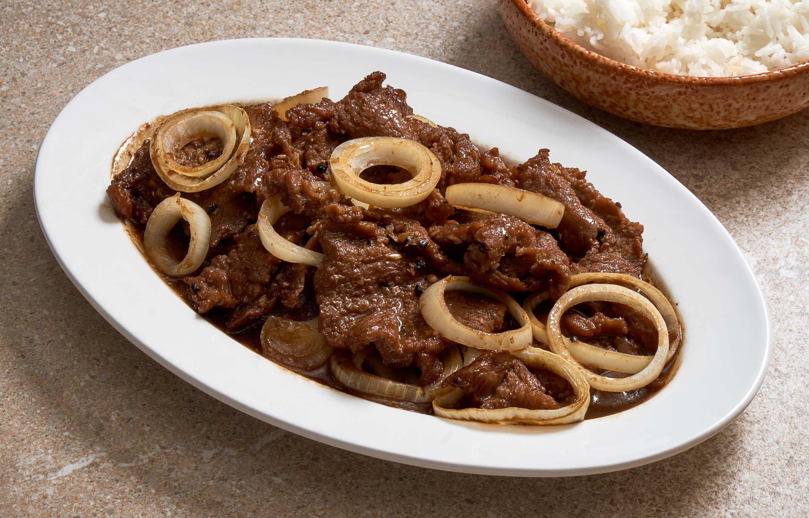

Bistek Tagalog

Ingredients
- 2 lbs chuck roast beef thinly sliced
- 1 large onion sliced into rings
- 1 cup soy sauce
- 1/2 cup of lemon juice
- 2 TBSP black pepper
- 1 TBSP brown sugar
- 3 bay leaves
Process
- in a wok, begin searing the beef on medium-high heat
- once thuroughly browned add in your onion slices and stir aroud to cook
- then add in your black pepper and cook until onions are softened
- add in your soy sauce, lemon juice and brown sugar
- add bay leaves
- bring to a simmer and cover for 20-30 min on low
- it is done when beef is tender to your liking
- serve with rice